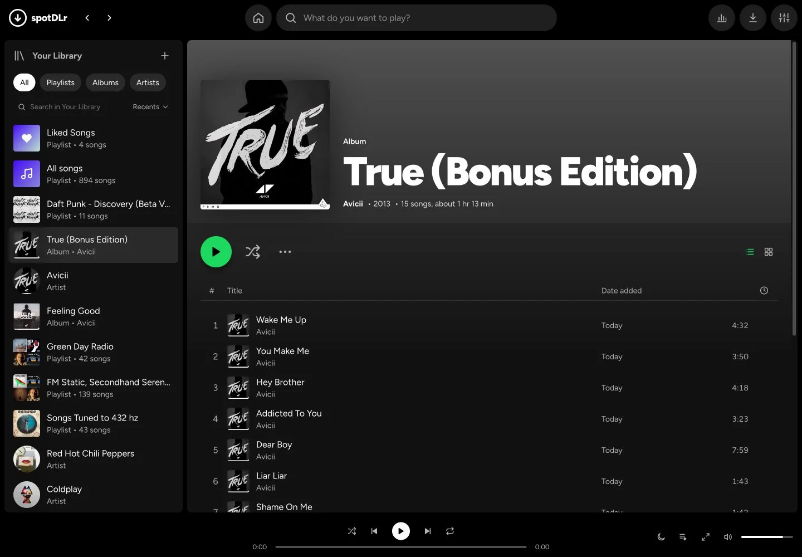

A home for your favorites.
Browse artists and albums, save the songs you love, and put your own playlists together.
Your collection.
Right at home.
A local player. A personal soundtrack.
Made for the collection
All the music you keep.
All the ways you love it.
Browse artists and albums, save the songs you love, and put your own playlists together.
Follow synced lyrics and open the fullscreen player for a little more time with the music.
Search with YouTube Music or paste a supported link. New downloads join your library.
Familiar from the first track
A library that feels like yours, with the albums, playlists, and playback controls right where you need them.
Make yourself at home Local files. Offline listening. No Spotify account needed.
The next track is yours
Free to download. Choose your setup and bring your collection home.
Download, install, and open spotDLr. Python, FFmpeg, and Node.js are included.
Download for WindowsOpen the DMG and drag spotDLr into Applications. Python, FFmpeg, and Node.js are included.
Download for MacApple Silicon · macOS 15+
Personal build · Mac installation help
Before the first track
Download the DMG, open it, and drag spotDLr into Applications. This build supports Apple Silicon Macs running macOS 15 or newer. No Terminal, Homebrew, or source folder is needed.
This personal build has not been notarized by Apple, so macOS may block its first launch. See Apple’s guide to opening apps safely for details. Prefer to build it yourself? Follow the Mac source setup guide.
This is spotDLr’s home on the web. The player and its Python server run on your computer, where your music files live.
No. Search and downloads can use YouTube Music without Spotify keys. Connecting Spotify is optional; see the setup guide for its requirements.
Yes, you can play files already on your computer. Finding and downloading music, fetching artwork, and looking up lyrics need an internet connection.
Find updates on GitHub Releases, or open an issue in the issue tracker. The screenshot above shows the current development build; released versions may look different.